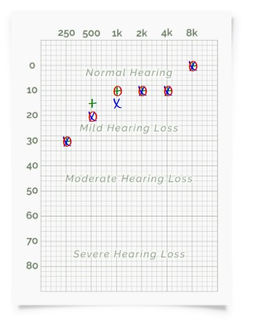
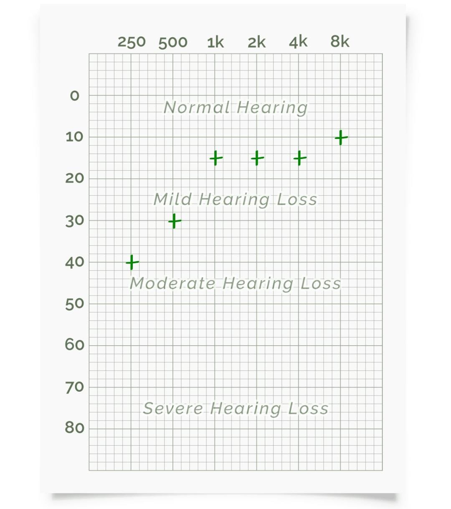
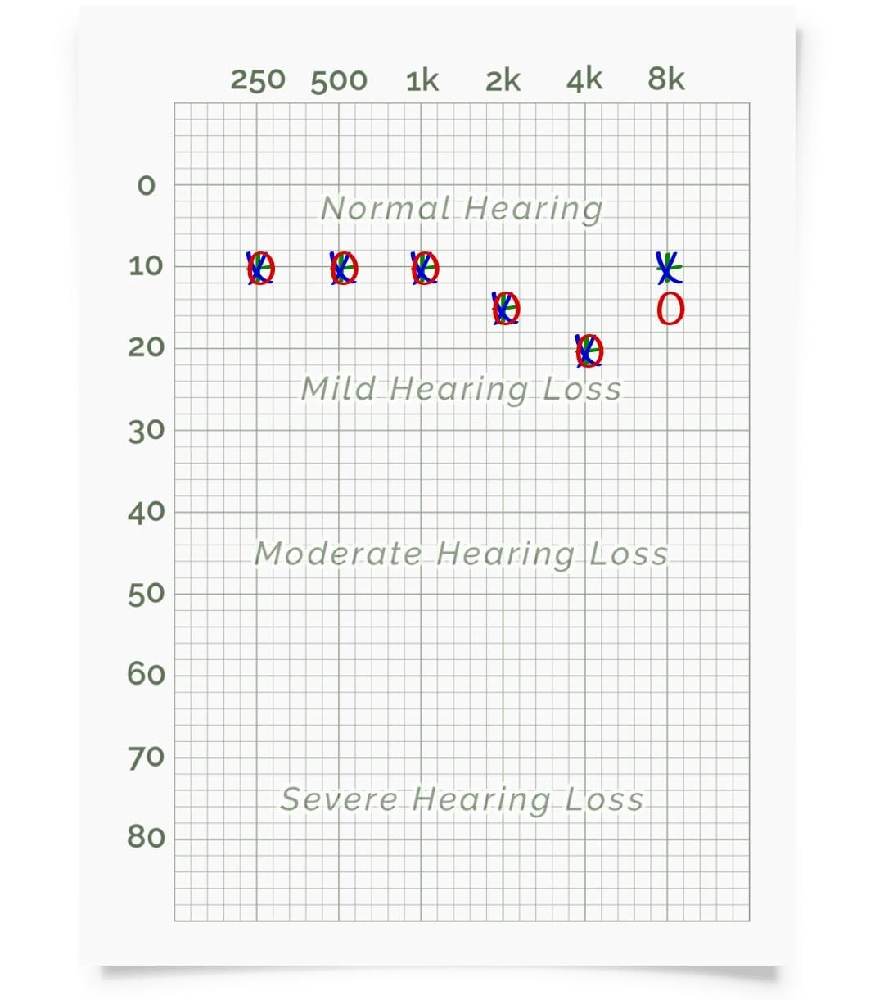
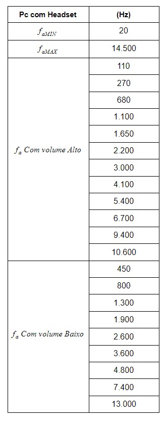
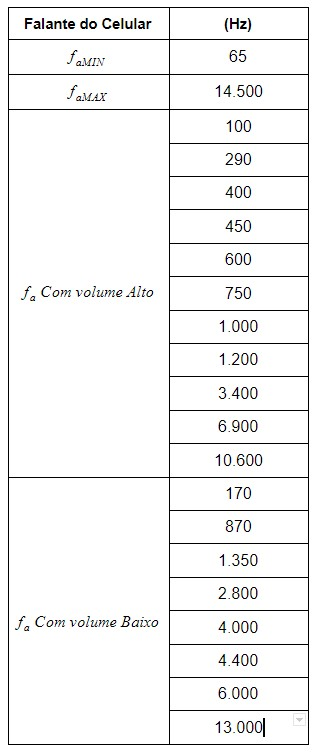
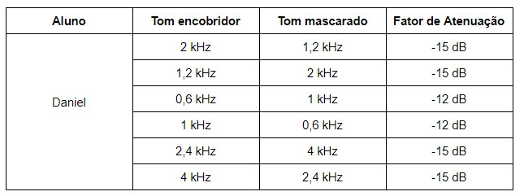

Teste de Audiometria
Teste de audiometria pelo computador, utilizando Headset. Em azul, o resultado para a orelha esquerda, em vermelho, o resultado para a orelha direita e em verde, o resultado para ambas as orelhas ao mesmo tempo.

Teste de audiometria pelo celular, utilizando os falantes do celular.

Teste de audiometria pelo celular, utilizando Headset. Em azul, o resultado para a orelha esquerda, em vermelho, o resultado para a orelha direita e em verde, o resultado para ambas as orelhas ao mesmo tempo.

A seguir, um áudio analisando os resultados obtidos
Teste de Faixa Audível
Teste de faixa audível pelo computador, utilizando Headset.

Teste de faixa audível pelo celular, utilizando os falantes do celular.

A seguir, um áudio analisando os resultados obtidos e explicando o porque das diferenças.
Teste de Mascaramento de Tons Harmônicos
Teste de faixa audível pelo computador, utilizando Headset.
